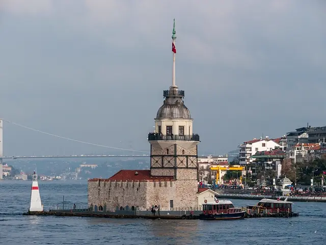

M2YENİKAPI – HACIOSMAN
SIRADAKİ DURAK► TAKSİM
İstanbul'u
durak durak gez,
kelimeleri bul.
Ücretsiz kelime bulmaca oyunu. Kayıt yok.
@turnikeoyunÜcretsiz kelime bulmaca oyunu. Kayıt yok.
@turnikeoyunCevabını yoruma yaz. Kaç tane bulduk? Yarın hikâyede.
@turnikeoyun▶ SESİ AÇ
Çarktaki harfleri sırayla birleştir.
Bulduğun kelime bulmacaya oturur.
5 bölüm bitince sıradaki durağa geç.
Halkalı'dan Gebze'ye giden herkesin bildiği matematik.
@turnikeoyun23 hat, 350'den fazla durak. Yorumda hattını yaz, o hattan bir bulmaca gönderelim.
@turnikeoyunİpucu: ulaşım. Sonucunu cevabı ele vermeden paylaş.
@turnikeoyun
Her durağı bitirene o semtin kartpostalı. 16 kartpostal, hepsi gerçek fotoğraf.
Fotoğraf: Matti Blume, CC BY-SA 4.0, Wikimedia Commons
İstanbul temalı kelime oyunu. Takipte kal, ilk bulmaca bu hafta.
@turnikeoyun